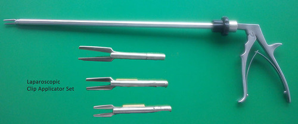
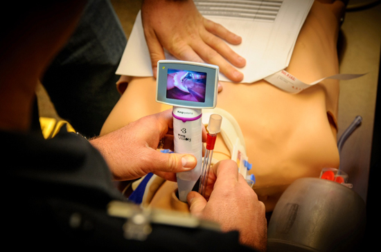

Sri lankan Innovations
The word ‘Innovation’ literally means a new idea, which is then transformed through various processes into reality. The theme of this issue of Business Lanka is ‘Innovation’, which focuses on the many industries in Sri Lanka that are constantly innovating to introduce novel products to the market.
-

Laparoscopic Knot Applicator by Dr. M.P.M. Thilanka Ratnapala
Laparoscopic Knot Applicator is a tool designed to facilitate application of “surgeons Knot” (FIG. 2) to ligate vessels and structures during laparoscopic procedures. Applying the secure surgeons knot in any surgical procedure is a life saving basic skill but it is a difficult task in laparoscopic surgeries. Operation of this tool (FIG. 3) ensures application of safer and secure knots compared to currently available techniques like clips, loops and Harmonic scalpel . Simple design of this tools enables laparoscopic surgeon to apply very secure conventional “surgeons knot” easily during laparoscopic surgeries even in a very limited surgical space. Cleaning and the sterilization of the instrument which is essential in surgical procedures is very easy as there are no electronic parts incorporated.
-

Video Laryngoscope by Dr. R.M.H.M. Anupa Indika Herath
This device is used in anaesthesia in order to facilitate insertion of a special tube called “endotracheal” tube into patient’s trachea in order to provide artificial ventilation. Compared to commercially available devices in this calibre, this device facilitates the procedure with 100% accuracy with minimal damage and risk to the patient. It also makes this procedure easy and safe especially in patients with abnormal anatomy explained in anaesthesia as “difficult airway risk”
-

Pest Repellent Eco Table Mat by Mr. Asiri Dilhan De Silva
This invention is an advance table mat, made from a major e-waste, discarded CDs, providing a very efficient & economical recycling same. It repels pests like ants, cockroaches, etc. with 100% non-toxic eco-friendly method, preventing contamination/damage of food & any other goods. This is also a very useful aid to visually impaired and elderly people.
-

HEADLIGHT DIMMING DEVICE FOR VEHICLES by Mr. W S RUWAN THAMEL
There is a problem when travelling at night, because most drivers don’t dim their headlights when two vehicles come towards each other. By using this device, When two vehicles are coming towards each other, head lights of both vehicles are dimmed until they pass each other. After that the head lights of both vehicles are automatically switched on. Furthermore this device will control the head/dim light operation in the following scenarios. When a vehicle is entering to a road, in a traffic jam, in a junction where traffic lights exist, in a pedestrian crossing, and in a railway crossing.
-

ORGANIC FERTILIZER - NATURAL MAGIC BOOSTER by Mr. W M SHANIKA WARNAKULASOORIYA
Natural magic booster (NMB) fertilizer can be used instead of chemical fertilizer in conjunction with other amendments to meet plant requirements and keep soil healthy. Rates /Amount varies according to the soil fertility, nutrient needs, amount of chemical contain in soil and amendments used. 250g-1kg /hectare. NMB produced by using natural materials and no any synthetic compound with an evidence based approach to planning and strategy. NMB speeds the supply of nutrient continually to have quality end product. And can be addressed to sustainable agricultural waste management and environment conservation. There are many national and international achievements for this products